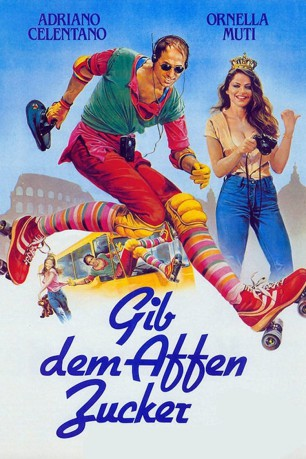

#4616 Gib dem Affen Zucker
Alternativ: Madly in Love (Englischer Titel)
 
 IMDB-Wertung: 6.9 / 10
IMDB-Wertung: 6.9 / 10  Metascore: 0
Metascore: 0 
Christina, Prinzessin des total abgebrannten Kleinstaats Saint-Toulipe, reißt bei einem Rom-Besuch ihren hoheitlichen Eltern aus und besteigt den Bus des temperamentvollen Barnaba, um die ewige Stadt zu besichtigen. Kaum sieht Barnaba die exotische Schönheit, wird aus dem braven Busfahrer ein Kunstflug-Pilot. Im Tiefflug kurvt er die Angebetete wild durch das Gewühl…zum Schrecken aller…aber er weiß noch nicht, daß Christina eine Prinzessin ist. Ob das gutgehen kann?
Jahr: 1981
Dauer: 96 Minuten
FSK: 12
Land: Italien Studio: CarolandTonspuren:
Untertitel:
Auflösung: 1080p (1408x1080) Größe: 3809 MB
Genre: Komödie, Liebe
Regisseur: Franco Castellano, Giuseppe Moccia
Drehbuch: Michael Konyves
Soundtrack:
Darsteller:
 Adriano Celentano als Barnaba Cecchini
Adriano Celentano als Barnaba Cecchini- Ornella Muti als Principessa Cristina
 Adolfo Celi als Gustavo VI di San Tulipe
Adolfo Celi als Gustavo VI di San Tulipe- Milla Sannoner als Betsy, la consorte di Gustavo VI
- Enzo Garinei als console, segretario di Gustavo
- Corrado Olmi als Sindaco
- Franco Diogene als Capo cameriere
- Alma Valli als
- Dino Cassio als Vigile
- Tiberio Murgia als Venditore di tappeti
- Silvia Ferluga als Cartomante
- Luigi Castejon als Segretario ambasciatore
 Fulvio Mingozzi als
Fulvio Mingozzi als - Vincenzo De Toma als Uomo tamponato
- Gabriella Franchini als
- Gerry Bruno als Cameriere
- Lidia Costanzo als
- Antonio Ballerio als
- Alberto Guerra als
- Bernardo Malacrida als
- Dante Senarica als
- Renato Oliverio als Mario
- Alfio Patané als Chef
- Peter Chadwick als
- Alessandra Campari als
- Matilde Ammirata als
- Paola Lesina Romano als
- Jimmy il Fenomeno als Benzinaio
- Tony Morgan als
- Onorio Mantovani als Proprietario stand tir
- Sasha D'Arc als Guardiaspalle
- Filippo La Neve als Lunch Guest
- Francesco Anniballi als (uncredited
- Raffaele di Sipio als Uomo a tavola al ricevimento , uncredited
- Ettore Martini als Uomo che guarda la tv al bar , uncredited
- Valentino Simeoni als Uomo che trasporta i televisori , uncredited
Datei: X:\1981\Gib dem Affen Zucker (1981, FSK12, 1408x1080).mkv seit 24.10.2016
Festplatte: HD 1980-1986
 Es gibt insgesamt 33 Filme in der Gruppe '1981'
Es gibt insgesamt 33 Filme in der Gruppe '1981'